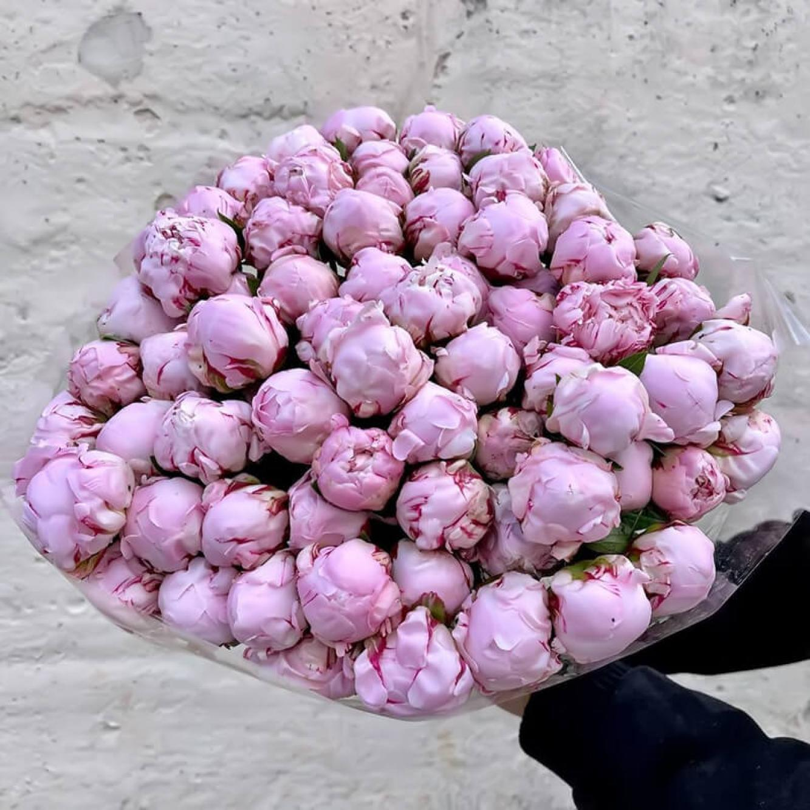
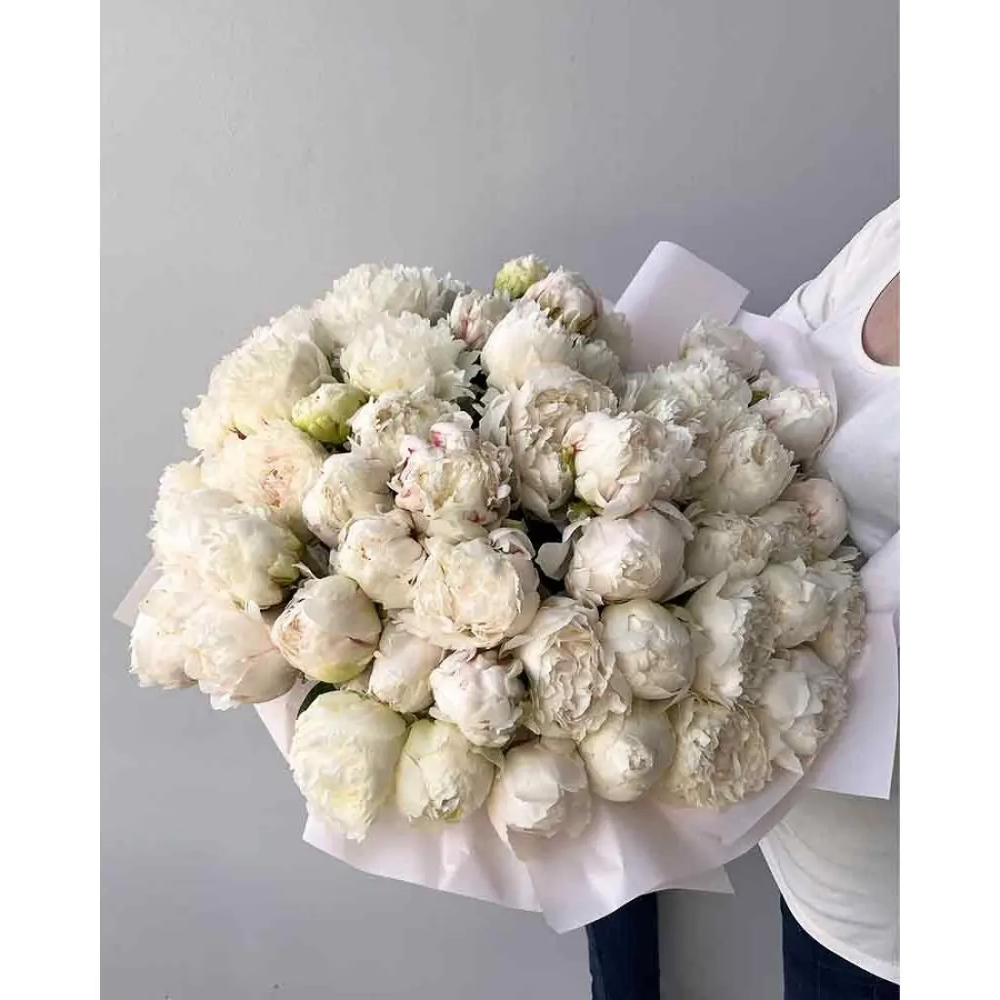
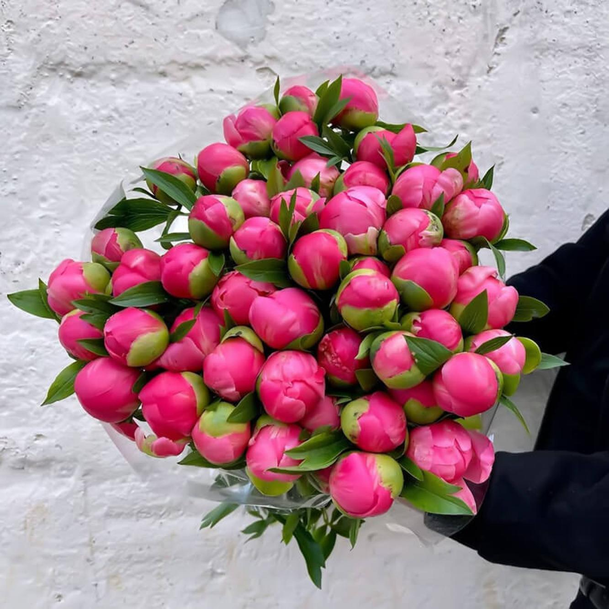

Рожеві півонії "Sarah Bernhardt"

Класика флористики. Ці півонії вирізняються великими махровими бутонами та неймовірним солодким ароматом.
Королева весняного саду у вашому домі

Класика флористики. Ці півонії вирізняються великими махровими бутонами та неймовірним солодким ароматом.

Втілення ніжності та чистоти. Ідеальний вибір для весільних букетів або подарунка близькій людині.

Унікальний сорт, що змінює колір під час цвітіння від насиченого коралового до ніжного кремового.
Щоб ваші квіти радували вас до 10-14 днів, дотримуйтесь простих правил:
Більше професійних лайфхаків читайте у розділі поради по догляду.